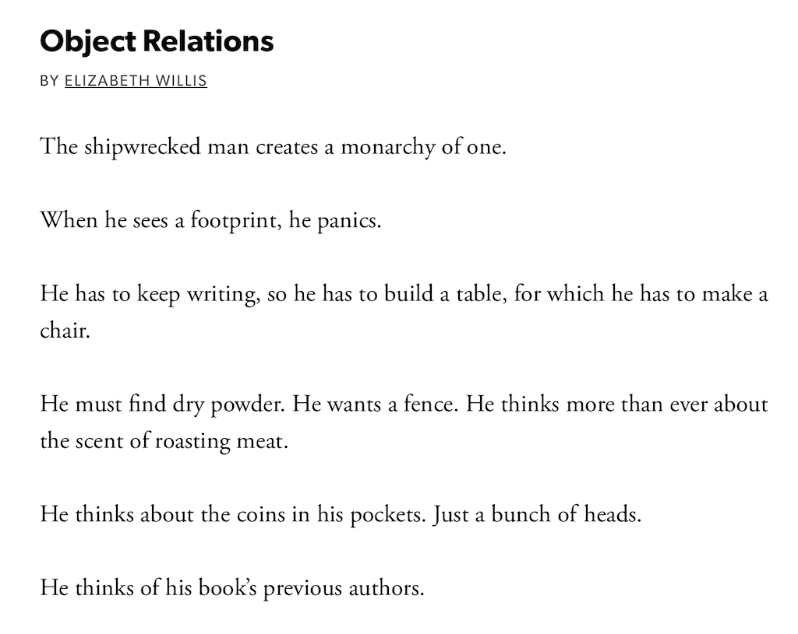

James's Year in Pictures
Lime
Although the connection is obvious, just in case anyone is confused... We went to Zurich and the good citizens of that amazing city have got electric scooters. The scooters are called Lime bikes, I used one of the scooters to go to a hairdresser. He gave me the best haircut of my life - sorry Supercuts - and I am expecting to get a lot of frequent flyer miles, based on the number haircuts I need each year.
Miami

Probably not the one you were thinking about. We had an amazing time at the competition, and I am really looking forward to being back there in a few months.
Spline
Ever wondered about the most efficient way to make a robot traverse a play field? Of course you have, because it is a fascinating topic. I spent a lot time this year pondering the mathematics of this question, and I would be delighted to tell you all about it. No, it's no trouble at all. Let me just get my slides. Wait, don't leave. Or, if you have to leave at least move in a mathemaically efficient way!
Object
Poetry is not something I thought would interest me. However, this year I had to write a poetry paper, and I was amazed to discover that it is actually really engaging. A big thank you to my English teacher, Mr. Potter for shining a light on this subject. Of course, splines are still way more interesting. In fact, I have a lecture all about them.